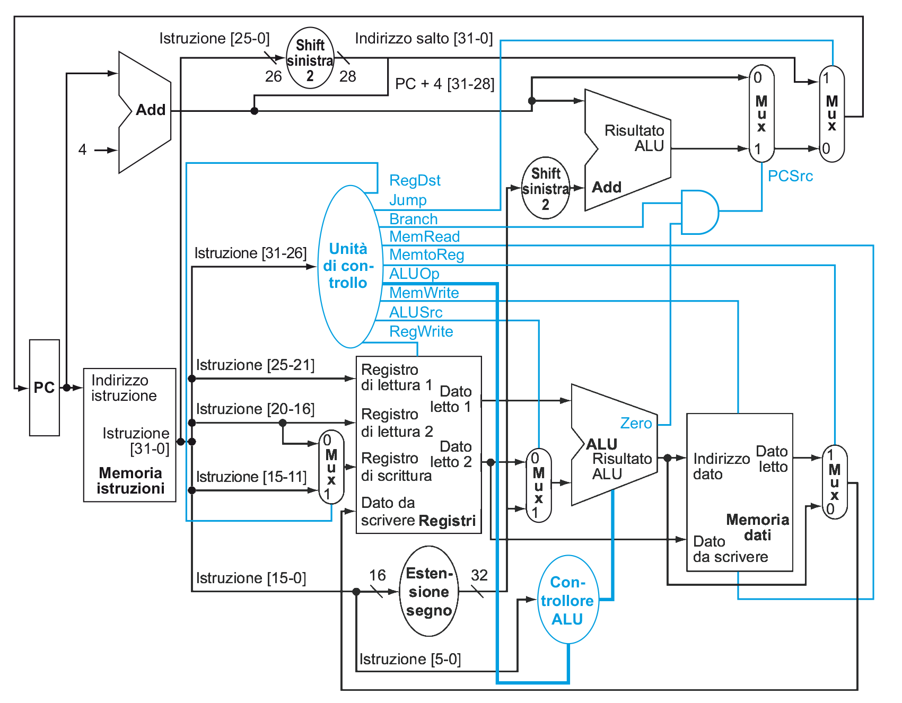
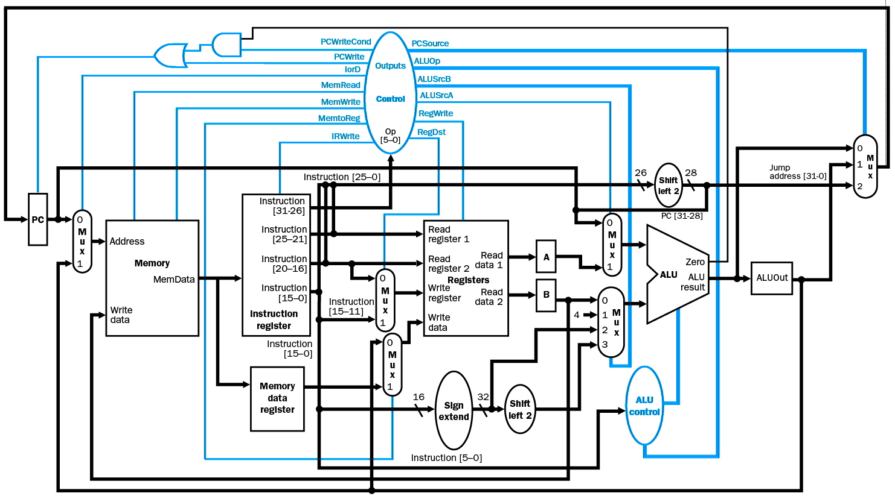

CPU
La più semplice CPU realizzabile è quella a ciclo singolo, cioè che ogni istruzione richiede un singolo ciclo di clock per effettuare il Fetch-Decode-Execute.
L'accesso ai registri e alla memoria verrà effettuato da:
M[x], cioè la word all'indirizzoxR[y], cioè il registroy
Istruzioni
Le istruzioni principali sono:
- Memory-reference:
lw,sw - Arithmetic-logic:
add,sub,and,or,slt - Control-flow:
beq,j
Decodificando i vari tipi di istruzioni, otteniamo:
rd,rt,rs, cioè i registriImm16,Imm26, che corrispondono ai valori immediati delle istruzioni
Implementazione
Di conseguenza il pseudocodice delle operazioni che riuscirà a fare il processore è:
add:R[rd] = R[rs] + R[rt]; PC += 4;sub:R[rd] = R[rs] - R[rt]; PC += 4;lw:R[rt] = M[R[rs] + sign_ext(Imm16)]; PC += 4;sw:M[R[rs] + sign_ext(Imm16)] = R[rt]; PC += 4;beq:PC += 4; if (R[rs] == R[rt]) {PC += sign_ext(Imm16) << 2;}dovesign_ext(Imm16)corrisponde all'estensione in CA2 diImm16(e.g. )j:PC = (PC + 4)[31-28] | (Imm26 << 2);dove:Imm26 << 2corrisponde aImm26 * 4, e serve per allineare l'indirizzo alla word- mentre l'OR con
(PC + 4)[31-28](dal bit 28 perchè lo shift occupa 2 bit in più) serve per completare l'indirizzo, visto che nei 26 bit della J-Type non ci sta un indirizzo di memoria assoluto
Circuito a Singolo Ciclo

Struttura
Separando dal circuito le due memorie si può riordinare per ottenere due scatole nere:
-
Datapath (circuito sequenziale in nero): è la parte della CPU che ha il compito di effettuare i vari calcoli (assieme alla ALU) il cui risultato dipende dallo stato dei registri
-
Control (circuito combinatorio in blu): ha il compito di decidere quali componenti del datapath attivare e quali no in base all'istruzione letta (e nel caso di Zero dal risultato ottenuto dalla ALU)
Controllo ALU
L'input di controllo della ALU, si ricava in base all'opcode (da cui ) e a funct (per le R-Type, il resto è don't care) dell'istruzione letta:
| Istruzione | |||
|---|---|---|---|
| 00 | XXXXXX | 0010 | lw/sw |
| 01 | XXXXXX | 0110 | beq |
| 10 | XX0000 | 0010 | add |
| 10 | XX0010 | 0110 | sub |
| 10 | XX0100 | 0000 | and |
| 10 | XX0101 | 0001 | or |
| 10 | XX1010 | 0111 | slt |
da cui:
Svantaggi
Tra gli svantaggi di questo tipo di CPU ci sono:
-
Memorie duplicate:
Dato che in un singolo ciclo non è possibile effettuare sia lettura che scrittura, vengono usate due memorie: una per le istruzioni e una per i dati, in modo da poter leggere l'istruzione in posizione
PCed eseguire anchelwosw. -
Adder in eccesso:
Le operazioni che richiedono la ALU (e.g. somma, sottrazione, ...) la tengono occupata per l'intero ciclo di clock. Per questo motivo non è possibile utilizzarla per
PC += 4, nemmeno conbeqvisto che è impegnata nella sottrazione dei due operandi per trovare Zero. -
Periodo di clock prolungato:
Se il periodo del clock fosse variabile in base all'istruzione, si avrebbe un tempo medio (picosecondi), con un massimo di (per
lw) e un minimo di (perj), che produrrebbe uno speedup pari a: dove è il numero di istruzioni di un programma.Dato però che il periodo non è variabile, bisogna assicurare la stabilità del circuito per tutte le istruzioni e quindi renderlo pari al tempo massimo .
Questo problema è risolto con la CPU a multiciclo, che suddivide ogni istruzione in più step (ognuno dei quali richiede lo stesso ridotto), diminuendo il tempo totale in base all'istruzione eseguita.
Circuito a Ciclo Multiplo

La CPU a ciclo multiplo cerca di risolvere i problemi di quella a singolo ciclo, dividendo l'esecuzione delle istruzioni in più cicli più corti.
In questo modo il periodo di clock è ridotto notevolmente e, anche se è comunque fisso, ogni istruzione richiederà un numero di passi (tick di clock) variabile, rendendo il tempo totale dipendente dall'istruzione.
Questo però, implica che la parte di controllo della CPU debba essere implementata come circuito sequenziale, dato che deve memorizzare lo stato (cioè il passo di esecuzione) in cui si trova.
Passi di esecuzione
- Fetch dell'istruzione dalla memoria e
PC += 4con l'ALU (dato non è occupata) - Decodifica istruzione (sull'unità di controllo), lettura dei registri e calcolo indirizzo di salto (per
beq) - Esecuzione R-Type dalla ALU, calcola l'indirizzo di memoria (per
lw/sw) o completabeq/j - Legge/scrive sulla memoria (per
lw/sw) o completa R-Type scrivendo sul registro il valore di ALUOut - Completa
lwscrivendo nel registro
Nel complesso, un'istruzione può richiedere dai 3 ai 5 cicli per il completamento.